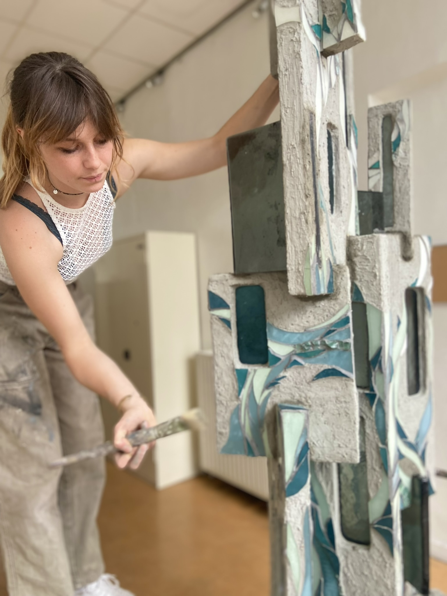
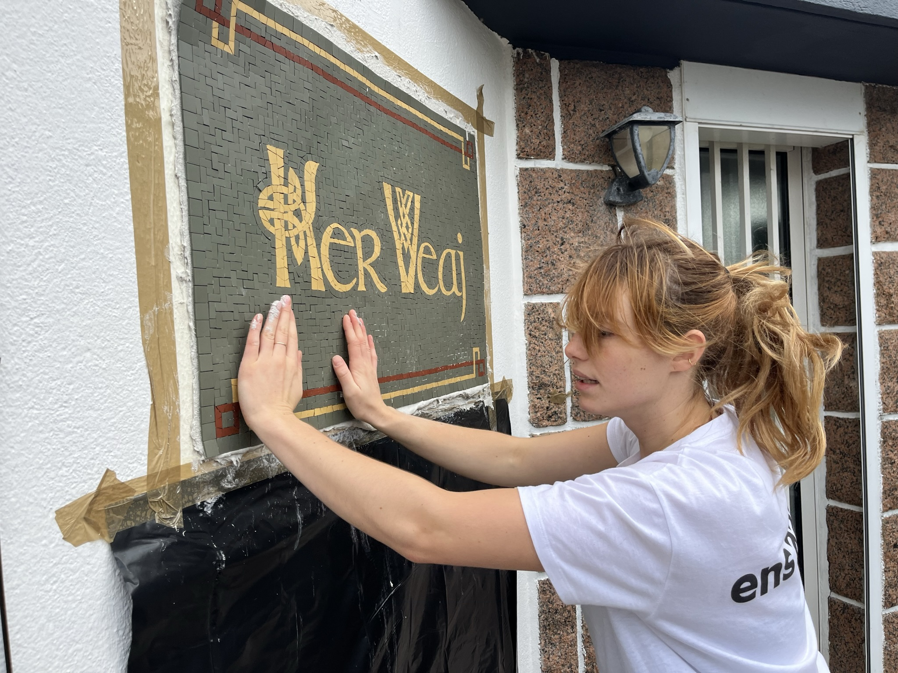
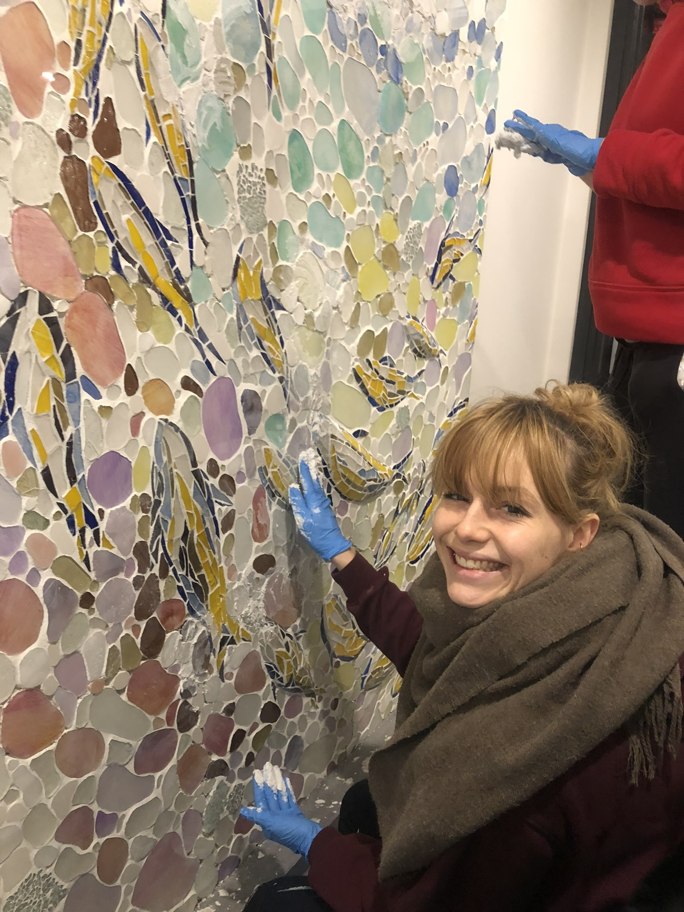

Qui suis-je ?
Artiste et artisan mosaïste. Diplômée en mosaïque ornementale à l'Ecole Nationale Supérieure des Arts Appliqués et des Métiers d'Arts à Paris.
Je réalise vos projets personnalisés sur commande. Toutes mes créations sont à vendre, si vous êtes intéréssé contactez-moi par mail ou par téléphone. Ce qui m'inspire en particulier c'est le mysticisme singulier des croyances bretonnes.
Ses légendes ouvrent la porte sur un monde imaginaire et suggère un passage. Beaucoup d'autres éléments relatifs à la Bretagne se rejoignent sur cette notion de lien entre deux univers : les menhirs symbolisent une connexion avec l'au-delà, les symboles celtes sont un langage, ils expriment une façon particulière d'appréhender la vie humaine. Et ce toujours en étant liée à cette idée de connexion entre plusieurs mondes.
Ce qui m'intéresse c'est de travailler sur la notion de « passage » : je veux étudier la façon de donner un intérêt au passage entre deux lieux tout en jouant avec le lien entre croyances et réalité. Partir du réel pour accompagner l'observateur vers une autre approche sur ce qui l'entoure, une vérité au-delà de celle disponible à la surface de la vie quotidienne.